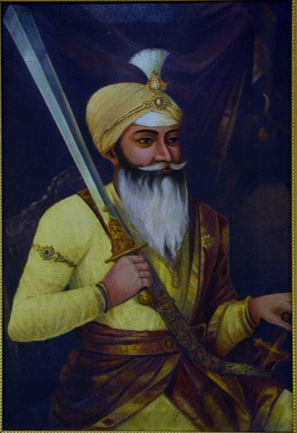

शाम सिंह अटारीवाला


शीर्षक: शाम सिंह अटारीवाला
श्रेणी: धार्मिक कोना
कलाकार: ऐतिहासिक व्यक्तित्व
वर्ष: 1790 – 1846
श्रेणी: धार्मिक कोना
कलाकार: ऐतिहासिक व्यक्तित्व
वर्ष: 1790 – 1846
शाम सिंह अटारीवाला
सरदार शाम सिंह अटारीवाला (1790–1846) अमृतसर के प्रसिद्ध अटारी घराने के महान योद्धा, महाराजा रणजीत सिंह के घनिष्ठ मित्र और खालसा सेना के वरिष्ठतम जरनैल थे। उनकी पुत्री नानकी का विवाह महाराजा रणजीत सिंह के पौत्र कंवर नौनिहाल सिंह से हुआ था। वे अपनी सत्यनिष्ठा, निष्कलंक देशभक्ति और अदम्य साहस के लिए संपूर्ण पंजाब में अत्यंत सम्मानित थे।
10 फरवरी 1846 को प्रथम आंग्ल-सिख युद्ध के अंतिम 'सबराओं के युद्ध' में जब ब्रिटिश सेना ने सिख मोर्चों को घेर लिया और गद्दार सेनापति तेज सिंह ने नावों का पुल तोड़कर भागने का रास्ता बंद कर दिया, तब 70 वर्षीय शाम सिंह अटारीवाला ने मैदान छोड़ने से साफ इनकार कर दिया। उन्होंने पवित्र श्री गुरु ग्रंथ साहिब के समक्ष प्रतिज्ञा ली कि वे या तो विजयी होकर लौटेंगे या रणभूमि में शहादत पाएंगे।
उन्होंने सफेद कफन-नुमा वस्त्र धारण किए, अपने प्रिय घोड़े पर सवार होकर 'बोले सो निहाल, सत श्री अकाल' के गगनभेदी जयघोष के साथ ब्रिटिश 50वीं और 31वीं रेजिमेंट पर सीधा धावा बोल दिया। जब तक उनके पास तलवार रही, वे अकेले दर्जनों शत्रुओं का संहार करते रहे। अंततः उनके सीने में सात गोलियां लगीं और वे सतलुज के किनारे वीरगति को प्राप्त हुए। अंग्रेज सेनापति लॉर्ड गफ ने भी उनकी पार्थिव देह के सम्मुख नतमस्तक होकर उन्हें 'खालसा का सबसे सच्चा और वीर जरनैल' स्वीकार किया। आज भी अटारी में उनकी समाधि पर हर वर्ष उनकी पावन स्मृति में अखंड पाठ और मेला आयोजित होता है।
'शाह मुहम्मदा सिंग्घां ने जान देती, कीते जंग दे विच्च कमाल यारो!'
(शाह मोहम्मद कहते हैं कि सिंहों ने अपने प्राणों की आहुति दे दी, पर युद्ध के मैदान में अद्वितीय कमाल कर दिखाया!)
— जंगनामा शाह मोहम्मद
सरदार शाम सिंह अटारीवाला (1790–1846) अमृतसर के प्रसिद्ध अटारी घराने के महान योद्धा, महाराजा रणजीत सिंह के घनिष्ठ मित्र और खालसा सेना के वरिष्ठतम जरनैल थे। उनकी पुत्री नानकी का विवाह महाराजा रणजीत सिंह के पौत्र कंवर नौनिहाल सिंह से हुआ था। वे अपनी सत्यनिष्ठा, निष्कलंक देशभक्ति और अदम्य साहस के लिए संपूर्ण पंजाब में अत्यंत सम्मानित थे।
10 फरवरी 1846 को प्रथम आंग्ल-सिख युद्ध के अंतिम 'सबराओं के युद्ध' में जब ब्रिटिश सेना ने सिख मोर्चों को घेर लिया और गद्दार सेनापति तेज सिंह ने नावों का पुल तोड़कर भागने का रास्ता बंद कर दिया, तब 70 वर्षीय शाम सिंह अटारीवाला ने मैदान छोड़ने से साफ इनकार कर दिया। उन्होंने पवित्र श्री गुरु ग्रंथ साहिब के समक्ष प्रतिज्ञा ली कि वे या तो विजयी होकर लौटेंगे या रणभूमि में शहादत पाएंगे।
उन्होंने सफेद कफन-नुमा वस्त्र धारण किए, अपने प्रिय घोड़े पर सवार होकर 'बोले सो निहाल, सत श्री अकाल' के गगनभेदी जयघोष के साथ ब्रिटिश 50वीं और 31वीं रेजिमेंट पर सीधा धावा बोल दिया। जब तक उनके पास तलवार रही, वे अकेले दर्जनों शत्रुओं का संहार करते रहे। अंततः उनके सीने में सात गोलियां लगीं और वे सतलुज के किनारे वीरगति को प्राप्त हुए। अंग्रेज सेनापति लॉर्ड गफ ने भी उनकी पार्थिव देह के सम्मुख नतमस्तक होकर उन्हें 'खालसा का सबसे सच्चा और वीर जरनैल' स्वीकार किया। आज भी अटारी में उनकी समाधि पर हर वर्ष उनकी पावन स्मृति में अखंड पाठ और मेला आयोजित होता है।
'शाह मुहम्मदा सिंग्घां ने जान देती, कीते जंग दे विच्च कमाल यारो!'
(शाह मोहम्मद कहते हैं कि सिंहों ने अपने प्राणों की आहुति दे दी, पर युद्ध के मैदान में अद्वितीय कमाल कर दिखाया!)
— जंगनामा शाह मोहम्मद

मोबाइल पर खोलें
अपने फोन पर इस कलाकृति को देखने के लिए स्कैन करें।